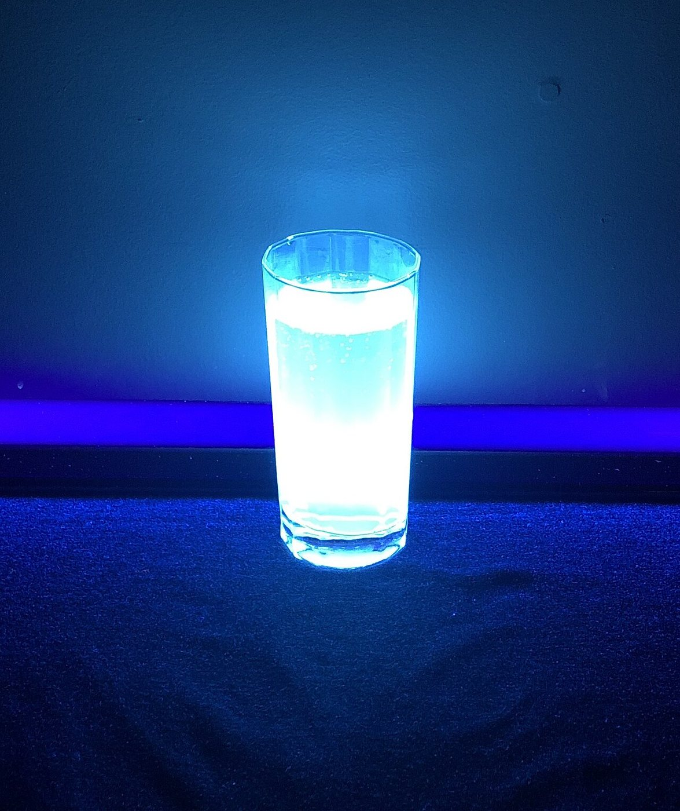
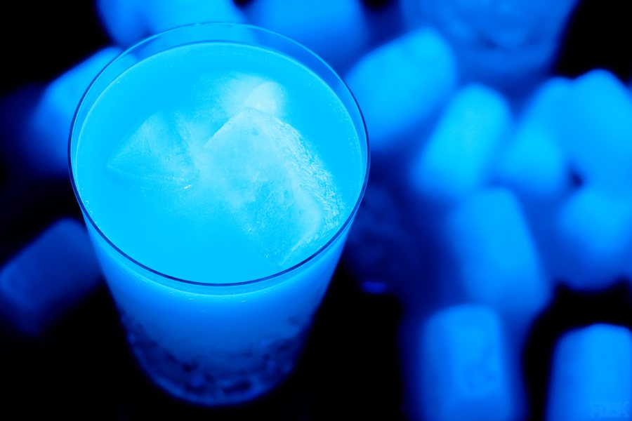
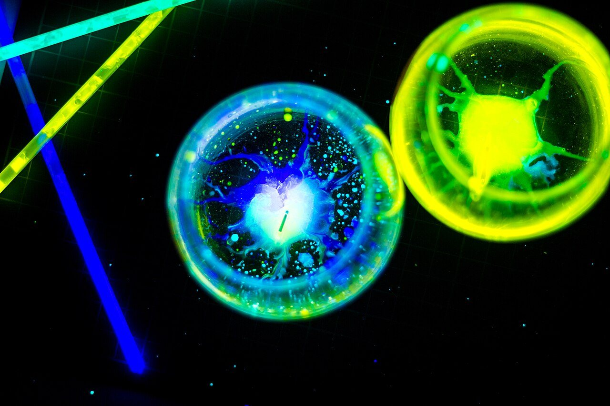
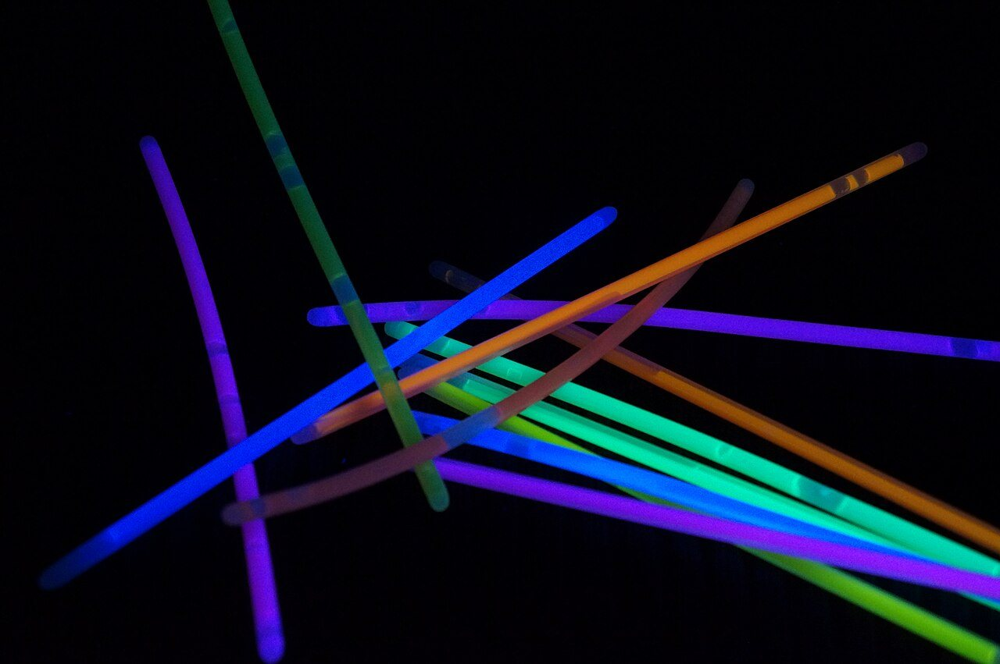
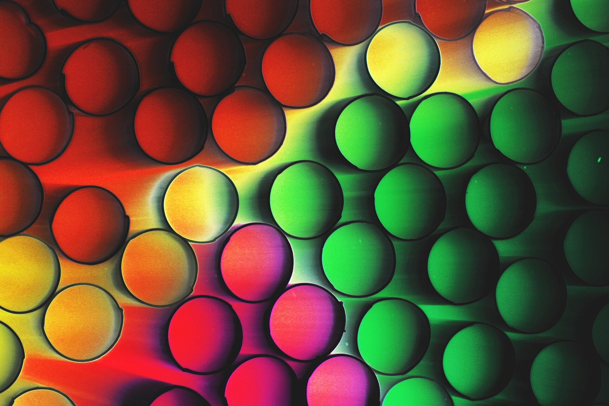
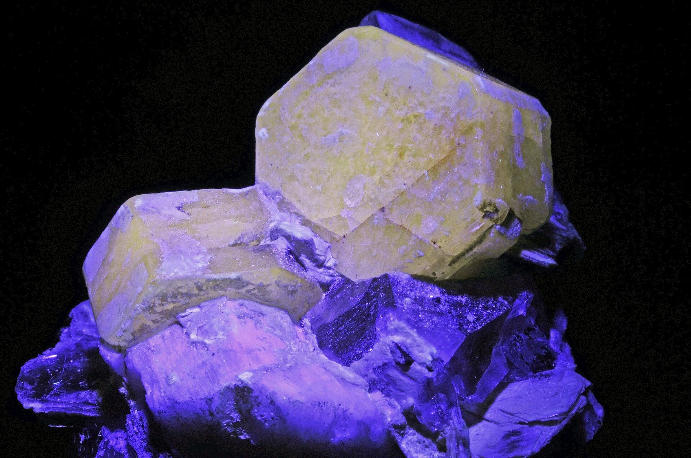
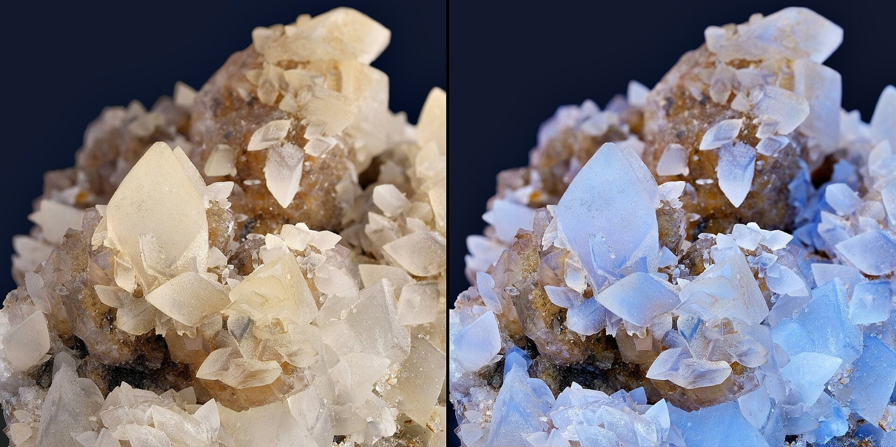

off the Faery Yurt · under the Glimmer Window · lit by a UV lamp
off the faery yurt · through the door under the glimmer window
The Play Pod
A tray, a UV lamp, and things to get your hands into.
This is my sensory play pod. I have gathered ideas here for families, for glow play under a UV lamp, messy play, mark making and tuff trays, and every idea says who shared it. The photographs are real ones: mine from my own yurt, and the rest from people who have shared theirs for anybody to use. I work with all of the people at the foot of the page, and I would send you to any of them.
HOW LOUD DO YOU WANT IT?
Starts wherever your device says. In here MAX lets the glow in the drawing breathe, slowly. The lamp switch works the same at every setting, and nothing in here ever flashes.
Under the UV lamp


My yurt has a UV lamp, and when the big lights go off and it comes on, the room glows: the wisteria, the jellyfish, the paper star, the spots on the toadstool. Nothing in it is glowing by itself. The lamp gives out light we can hardly see, and things that fluoresce give it back as colour we can.
- Under a UV lamp, anything that fluoresces glows only while the lamp is on, and stops the instant it goes off. (from HiWave Makers)
- Glow-in-the-dark things are different: they store the light up and give it back slowly, for minutes after the lamp goes off. Try both under one lamp and switch it off. (from HiWave Makers)
- A torch marked 365 nm shows the glow far better than one marked 395 nm, which fills the room with visible violet and drowns it. (from HiWave Makers)
- Point the lamp at the things you are playing with, never at anybody's eyes. (from HiWave Makers)
Glow play



_under_the_Black_Light_(7261032728).jpg){kind=link}

.jpg){kind=link}








Things to make glow under the lamp. Nothing here is to eat or drink: tonic water poured into a craft jar is for looking at.
- Tonic water glows blue under a UV torch, because of the quinine in it. Pour it half and half with water, then a quarter, and see the glow fade bit by bit. (from HiWave Makers)
- Then hunt round the house with the torch: highlighter ink, washing powder stirred into water and plain white paper all glow too. (from HiWave Makers)
- Put glow sticks in warm water and in cold water, and watch how differently they glow. (from Steve Spangler Science, found through Project Learning Tree)
- Glowing foam paint: shaving cream, white glue and neon paint mixed into a puffy paint that glows under the lamp. (from Susie Allison of Busy Toddler, found through Project Learning Tree)
- Glowing oil and water: oil that glows, floating on water, and never mixing however you stir. (from Growing A Jeweled Rose, found through Project Learning Tree)
- A glowing lava lamp, in a jar, under a black light: her film is on the shelf at the foot of the pod. (from Emily Calandrelli)
- Glowing shaving-cream sensory bags: shaving cream and glow paint sealed in a bag, to squish and draw on with a finger, with no mess at all. (from The Pleasantest Thing)
- Glowing cloud dough: soft, crumbly dough that holds a shape when you squeeze it, and glows under the lamp. (from Powerful Mothering)
- Glow-in-the-dark play dough, to squash and roll in the dark. (from Sunhats and Wellie Boots)
- Galaxy jars: a jar layered with cotton wool, water and glowing paint, like a little night sky. (from an idea shared on Pinterest)
- Glow nails: nail varnish that glows under the UV lamp. (mine)
- A glow bath, in the dark, with something in the water that glows under UV. The lamp is a battery torch, or a mains lamp kept well out of reach of the water. (mine)
Messy play
Ideas for families, for getting your hands into things. Messy play is for the feel of it: there is no right way to do it, and nothing to get finished.
- Oobleck: cornflour and water, solid when you squeeze it and runny when you let go. (from Sarah McClelland of Little Bins for Little Hands)
- Jelly digging, shaving cream, sponges in a tub of water, finger painting and mud. (from Sarah McClelland of Little Bins for Little Hands)
- Ice excavation: little toys frozen into a block of ice, to free with warm water and spoons. (from Sarah McClelland of Little Bins for Little Hands)
- Cloud dough, rainbow rice in a tray, and painting a wall or a fence with plain water and a big brush. (from Sarah McClelland of Little Bins for Little Hands)
- Dry pasta with paper and glue, pom-poms and clothes pegs, measuring cups with porridge oats, sticky tape and sponges. (from BBC Tiny Happy People)
- Words to say while you play, for what it feels like and what you are doing: squishy, lumpy, slippy, soft, crunchy, splash, scrunch, squash. (from BBC Tiny Happy People)
- More messy play ideas for families are gathered by Fun-a-Day, by Twinkl, and on Alice Young's messy play board. (from Fun-a-Day, Twinkl and Alice Young)
- Where the play is with food, it is food that is safe for whoever is playing, allergies and all.
- Water beads are left out on purpose: they grow inside the body if swallowed, and safety agencies have warned about them for children.
Edible messy play
Messy play and mark making in food, for anybody who puts things in their mouth, and for anybody who likes to taste as they go. Edible means safe to eat for the person playing, which is different for everybody.
- Mark making in chocolate sauce spread thin on a tray, with fingers, spoons or a brush. (from Play of the Wild)
- Mark making in ketchup on a tray: red, smooth and a smell of its own. (from Play of the Wild)
- Gloop made of cornflour and oil, soft and silky, for drawing lines through and watching them close up again. (from Play of the Wild)
- Instant oat cereal mixed thick, for drawing in, squashing and squeezing. (from Play of the Wild)
- Cornflour with tapioca pearls in it, slippery with bumps to find. (from Play of the Wild)
- Edible means safe for whoever is playing: check allergies and intolerances first, and ask about anybody who cannot swallow safely, who may need food in a texture that is safe for them.
- Keep the food play to its own tray and its own time, so nothing that is not food ends up beside it.
Mark making
Making marks with anything that will make one, big or small, indoors or out, in paint, mud, water, foam or chalk.
- Outdoors and big: mud, water painting, giant brushes, sticks, chalk, spray bottles, sponges, leaves for brushes, puddles, ice, toy cars and balls rolled through paint, and mud handprints and footprints. (from The Muddy Puddle Teacher)
- Mark making for little ones, indoors and out. (from Play of the Wild)
- Sensory mark making for people with profound and multiple learning disabilities: marks made in shaving foam on a tuff tray, and with materials that are safe if they reach a mouth. (from Helen Robinson's PMLD sensory mark making board)
- More sensory mark making, in textures to feel as well as see. (from a sensory mark making board on Pinterest)
Tuff trays
A tuff tray is a big, shallow, low-sided tray, on the floor or on a stand, that holds a whole small world or a whole messy play at once, and keeps it in one place.
- Sensory tuff trays, set up for open-ended play. (from Learning and Exploring Through Play)
- Tuff tray activities for open-ended learning through play. (from Arthur Wears)
- The PlayTray, a tray made for sensory play and small worlds. (from Inspire My Play)
People I work with
I work and collaborate with all of these people, and I would send you to any of them.
Dr Joanna Grace
The Sensory Projects
Jo is Autistic, a teacher, and the founder of The Sensory Projects, which run on the idea that with the right knowledge and a little creativity, inexpensive things can become sensory tools for inclusion. She writes and teaches sensory stories.
Victoria Navin
Rhyming Multisensory Stories
Victoria makes sensory stories and Multisensory Music Journeys, and wrote a book about immersive sensory spaces.
Story Massage for Children
Story Massage
Stories told with simple massage strokes, shared on their own channel.
A film for the pod
Nothing is on the screen. Put a film up from the shelf.
On the shelf
-
Glow in the Dark Lava Lamp!
Emily Calandrelli · 26 April 2025 · 4:17
A lava lamp that glows under a black light, made in a jar: the glowing lava lamp from her book Stay Curious and Keep Exploring.
Chosen for Helen Edgar, 28 October 2026, each checked on its own watch page and each on its own channel on YouTube: Emily Calandrelli. None of them is affiliated with Stimpunks, and nothing of theirs is hosted here.
Where the ideas came from
The Play Pod is Helen Edgar’s, written in her voice for her, 28 October 2026. Every idea names who shared it, and the ideas are theirs: this room passes them on and copies none of their words. Helen’s photographs are hers and are not under this site’s licence; the rest are their photographers’, each credited under it, and every one is a real photograph, none of a child. The drawing of the pod is ours, and the film is its maker’s, on her own channel.
Job marker — a drinking straw glowing pink under the lamp
You have found a job marker. The Adventurer’s Guild is a shopfront on the street, and it posts jobs that send you round these rooms. Take the code below to its board and that job is done. Nothing here is scored, nothing expires, and one is a perfectly good number of jobs to do.
The job: A straw that glows
Quest code: STRAW